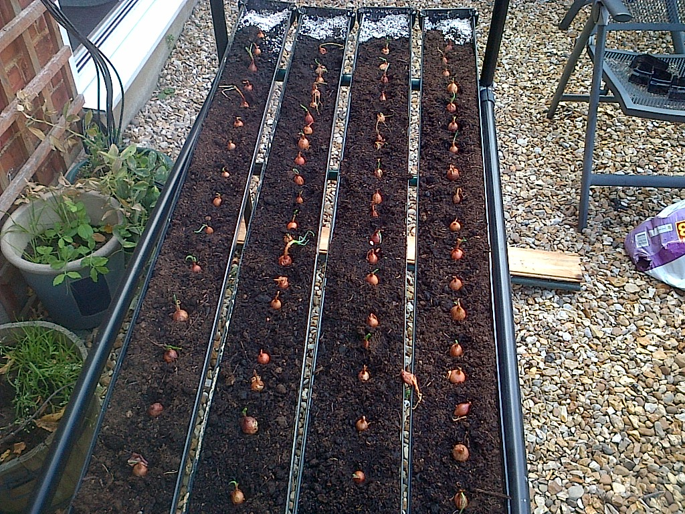
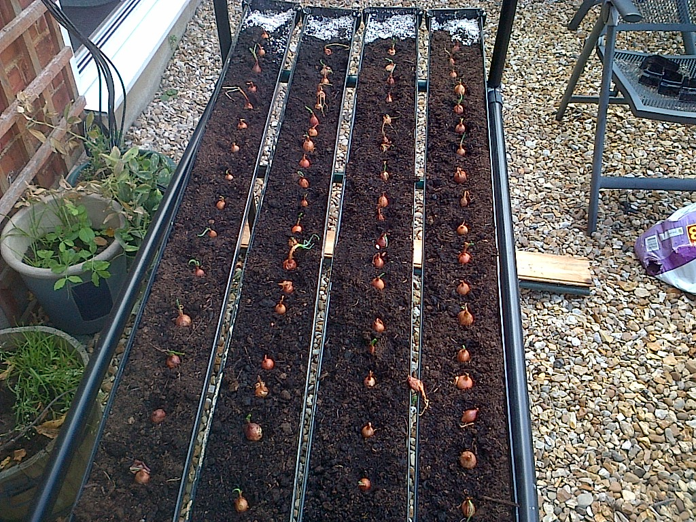

Greening Urban Environments
GutterGrowing - a basic guide
Guidelines - Project One
Build Your Own Basic GutterGrow System
What you need:
-
Flat Bottomed Guttering (usually comes in 3m-4m lengths - these may need cutting to more manageable lengths)
-
End Fittings - one sealing end and one push fit (for drainage) end for each gutter
-
Supporting structure (e.g. table, shelves) or frame (supporting structure needs to be able to hold gutters at an angle)
-
Drainage tray (optional)
-
Compost or growing substrate - you can use ordinary soil if you want to
-
Seeds or seedlings for your GutterGrow
Step 1 Get hold of some gutters
Gutters (perhaps no surprise) are fundamental to GutterGrowing systems. You may have some spare ones lying around or you may want to buy new or second hand. Plastic gutters are now the standard found in many DIY and builders merchants (see a list at the end of this guide) and come in many different colours, lengths and profiles. (list of gutter providers at end)
Some Considerations
Black gutters tend to adsorb heat (useful in aiding germination – but need water more often) whereas lighter coloured gutters tend to be cooler(requiring less irrigation) Flat bottomed gutters are the most versatile (as they don’t roll over) but it’s easier to slide plants out of round bottom gutters (it you intend to ultimately transfer them to a ground trench).
DIY stores will often cut gutters to the length you require but often the normal delivered length will be three, four or more metres. You will need to decide on the most suitable length that you find easy to handle. We have found that gutters cut to between 1 and 1.5 meters (when filled with compost) are quite manageable when building systems. We have also built some systems with 4 meter lengths but you need strong arms to move the sections around !
Metal gutters are heavier, expensive and more difficult to handle.
Useful Links
Step 2 Get hold of and fit end fittings
The best solution to irrigating plants growing in gutters is to have one end of the gutter higher than the other so that irrigation fluid will run from the higher end to the lower end. The higher end can be fitted with a sealed end fitting (where irrigation can be introduced) and the other lower end not sealed so that any excess irrigation fluid drains into a drip tray. It is possible to leave the draining end open but then there is the danger of compost or growing media being washed out of the open end. The push fit fittings mentioned earlier are an ideal solution as they contain the compost but also allow surplus water to drain out. These fittings are best obtained at the same time and from the same supplier as the gutters to ensure they all fit together !
White Sealed End Fitting and Push Fit End Fitting
 
